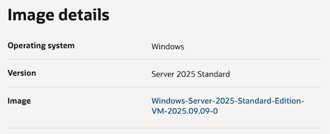
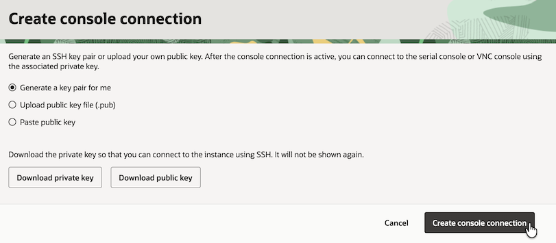
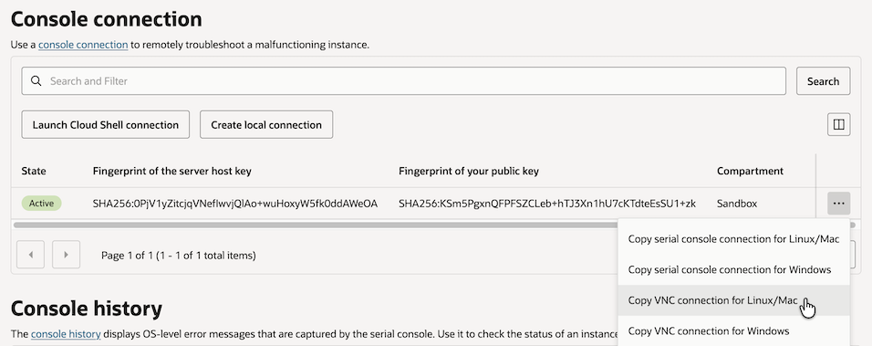
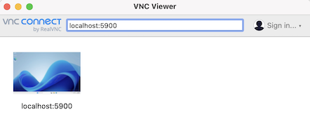
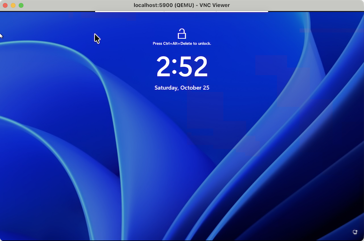
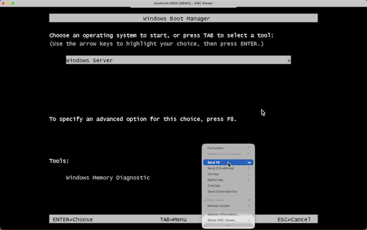
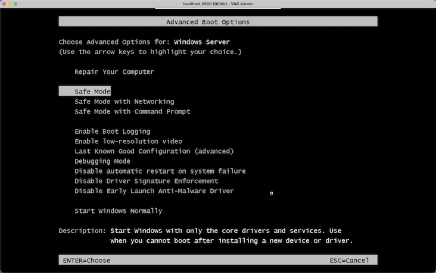
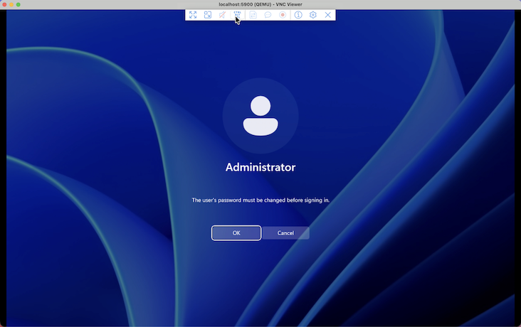
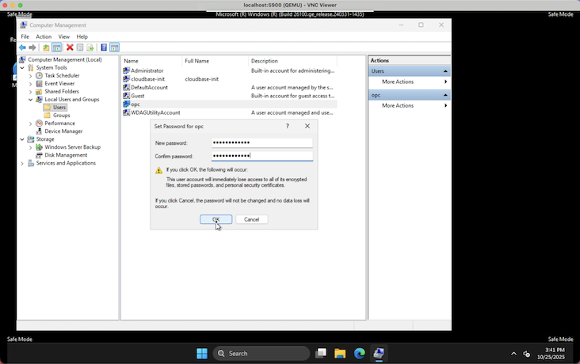

Windows Server에서 opc 유저 패스워드 초기화하기
OCI에서 Windows Server를 사용 중에 opc 유저 패스워드를 잊어 초기화가 필요한 경우, 다음 문서를 참고하여 초기화합니다. Windows Server 인스턴스를 생성한 이후, opc 유저를 기본으로 사용하는 합니다. Administrator를 여전히 한번도 사용하지 않은 경우, Administrator 패스워드를 초기화하고 다시 opc 유저 패스워드를 초기화하는 방법입니다.
Windows Server 2025 Standard
아래와 같은 Window Server를 사용하고 있는 상태에서 opc 유저 패스워드를 잊고 있는 상황을 가정합니다.

Console connection 연결하기
-
OCI Console에 로그인합니다.
-
Compute 인스턴스 상세정보에서 OS Management 탭으로 이동합니다.
-
Console connection에서 Create local connection을 클릭합니다.
-
SSH 키 쌍을 새로 생성하여 다운로드하거나, 이미 있는 경우, Public Key를 업로드 합니다.

-
Copy VNC connection for Linux/Mac을 클릭합니다.

-
복사한 명령을 실행합니다. 이때 private key가 디폴트 위치(
~/.ssh/id_rsa)가 아닌 경우,-i옵션으로 2군데에서 Private Key 위치를 지정합니다.$ ssh -i ~/.ssh/ssh-key-2025-10-25.key -o ProxyCommand='ssh -i ~/.ssh/ssh-key-2025-10-25.key -W %h:%p -p 443 ocid1.instanceconsoleconnection.oc1.ap-chuncheon-1.an4..6q@instance-console.ap-chuncheon-1.oci.oraclecloud.com' -N -L localhost:5900:ocid1.instance.oc1.ap-chuncheon-1.an4..zq:5900 ocid1.instance.oc1.ap-chuncheon-1.an4..zq ================================================= IMPORTANT: Use a console connection to troubleshoot a malfunctioning instance. For normal operations, you should connect to the instance using a Secure Shell (SSH) or Remote Desktop connection. For steps, see https://docs.cloud.oracle.com/iaas/Content/Compute/Tasks/accessinginstance.htm For more information about troubleshooting your instance using a console connection, see the documentation: https://docs.cloud.oracle.com/en-us/iaas/Content/Compute/References/serialconsole.htm#four ================================================= -
위 명령을 실행한 상태에서 VNC Viewer로
localhost:5900으로 접속합니다.

-
VNC Viewer로 연결한 상태에서, OCI Console로 이동하여, 해당 Compute 인스턴스를 Reboot합니다.
-
VNC Viewer 화면으로 돌아가, 리부팅이 시작되어 검은 화면이 뜨면, Boot Manager가 뜰때까지 키보드에서 Delete 키를 꾹 누르고 있습니다.
-
그러면 아래와 같이 Boot Manager 화면이 보입니다. 고급 옵션을 실행하기 위해 Mac 기준
fn키 +F8을 클릭하여, 팝업이 뜨면Send F8을 클릭합니다.
-
고급 옵션에서 Safe Mode로 이동합니다.

-
Ctrl+Alt+Del키를 누릅니다. -
Administrator를 한번도 사용하지 않았다면, 패스워드를 변경하라는 문구가 뜹니다. 패스워드를 설정하고 로그인합니다.

-
Administrator로 로그인한 상태에서 윈도우 시작 메뉴를 우클릭하여, Compute Management를 클릭합니다.
-
Local Users and Groups 아래 Users에서 opc 유저를 우클릭하여 Set Password를 클릭합니다.
-
팝업이 뜨면, 새 패스워드를 입력하여 초기화합니다.

-
이제 서버를 재부팅하고, opc로 변경한 새 패스워드로 로그인합니다.
이 글은 개인으로서, 개인의 시간을 할애하여 작성된 글입니다. 글의 내용에 오류가 있을 수 있으며, 글 속의 의견은 개인적인 의견입니다.